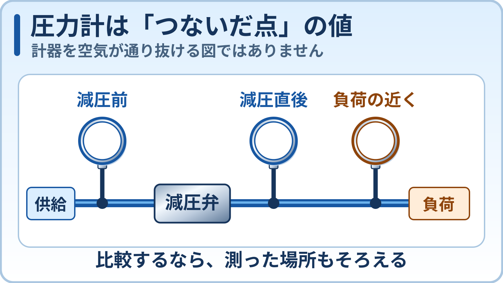
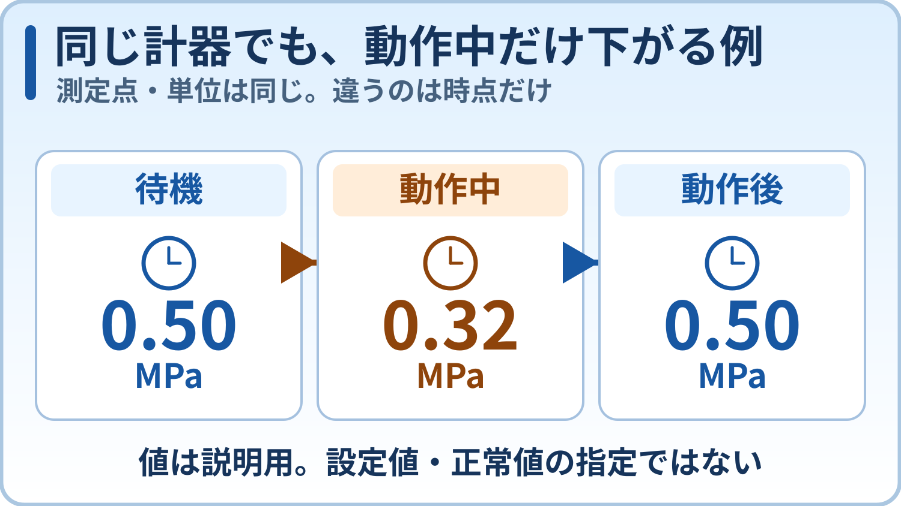
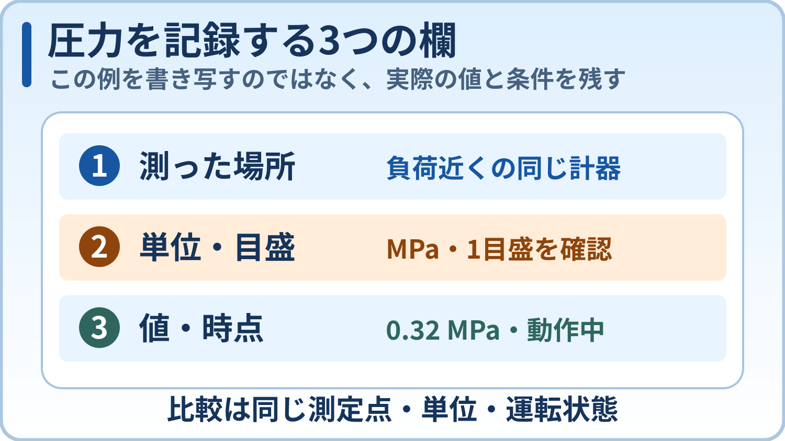

圧力計とは
最終内容更新：
圧力計は、取り付けた測定点の圧力を人が読むための計器です。空気・水・油のいずれに使えるかは製品によって異なり、空圧用を別の流体に流用できるという意味ではありません。 空圧設備では、圧縮空気がどれくらいの圧力で供給されているかを見るためによく使われます。
圧力レギュレータの近くに付いている圧力計は、調整後の二次側圧力を見るために使われることが多いです。 装置入口、FRLユニット、分岐回路、エアブロー回路、真空回路など、取り付けられる場所によって読み取る意味が変わります。
圧力スイッチが「圧力を検出して信号を出す部品」なのに対して、圧力計は人が圧力を目で読むための計器です。 この記事では、ON/OFF信号ではなく、針や表示値をどう読むかに絞って整理します。
まずはこう覚える
圧力計は、空圧設備の圧力を目で確認するための計器です。数字を見る前に「どこの圧力を見ているか」を確認するのが基本です。

先輩圧力計は、針の数字だけを見ても判断しにくいよ。レギュレータの前なのか後なのか、装置入口なのか分岐先なのかで意味が変わるからね。

後輩まず取付位置を見てから、針の値を読むんですね。
圧力計の基本構成

空圧設備では、エア源から来た空気がフィルタやレギュレータを通り、エアバルブやシリンダへ送られます。圧力計は主流路に空気を通す部品ではなく、圧力を取り出した位置を表示します。入口とレギュレータ直後、負荷近くでは、配管がつながっていても同じ読みに揃うとは限りません。既設の計器・表示名と設備図面を照らし合わせます。
アナログ圧力計は、針と目盛りで圧力を表示します。 デジタル圧力計は数値で表示しますが、現場ではどちらも「取付位置」と「単位」を確認してから読みます。
空圧では MPa 表示がよく使われます。計器や古い資料では kPa、bar、kgf/cm² などの表示もあるため、二重目盛りなら先に単位を見て、対応する側だけを読みます。真空側の表示には負のゲージ圧を扱う計器があり、正圧専用の計器とは用途が違います。
単位を見間違えない
たとえば 0.50 MPa = 500 kPa = 5.0 bar です。図面が MPa、表示が kPa なら、単位をそろえてから比べます。目盛りの最大表示値、設備の指定圧、いまの指示値はそれぞれ別の数字です。
圧力計の読み方で見るポイント
アナログ計は計器を触らず、文字盤の正面から単位と針先を読みます。数字の間は目盛りの区間数で数えます。たとえば 0.4 と 0.6 MPa の間が等間隔で10区間なら、1区間は 0.02 MPa。0.4 から5区間目は 0.50 MPa です。これより細かい値を針の位置から無理に読み取る必要はありません。
停止中の圧力と動作中の圧力は別々に記録します。シリンダやエアブローは動作に空気を使うため、待機中と違う値を示すことがあります。短い変化は針や表示の応答によって読み逃すこともあるので、見えなかったことを「下がらなかった」とは扱いません。必要なら設備に残っている時系列記録を使います。
| 見るポイント | 確認すること | 現場での見方 |
|---|---|---|
| 取付位置 | 元圧、二次圧、分岐先、真空側など | どこの圧力を表示しているか、配管と図面で確認する |
| 単位 | MPa、kPa、bar、kgf/cm²など | 読んでいる目盛りの単位を見間違えない |
| 針の状態 | ゼロ点、ふらつき、戻り、引っかかり | 針が不自然に止まる、戻らない、振れる場合は注意する |
| 動作中の変化 | 設備動作時に圧力が大きく落ちないか | 通常運転を安全な場所から見られる場合に限り、同じ動作の時点で比べる |
停止中だけで判断しない
同じ「停止」でも、供給がつながった待機と、供給を遮断した保全停止は別の状態です。記録には「待機」「動作中」「動作後」と書き、どの動作・計器かも添えます。比較のために設備を動かし直す必要はありません。
圧力計が正常な時・異常な時の見方

同じ下流側の計器が、待機中 0.50 MPa、負荷の動作中 0.32 MPa、動作後 0.50 MPa だったとします。分かるのはこの測定点で動作に合わせて表示が下がり、その後に戻ったこと。数値は説明例です。0.32 MPa が低すぎるかは、その測定点・動作時点での指定や通常記録と比べて判断します。
次に、同じ動作を記録した入口側の既設計器があれば照合します。入口側も下がるなら設備に入る前の供給記録や他設備との同時使用も確認候補です。入口はいつもどおりで、この計器だけ下がるなら、その間のフィルタ・レギュレータや分岐先の同時使用など、下流側を次の確認候補にします。どちらも一つの値だけでは、漏れや詰まりを特定できません。
| 状態 | 起きやすいこと | 確認する場所 |
|---|---|---|
| 指定圧付近で安定 | その点で指定範囲に入っている可能性 | 通常値、指定圧、動作中の変化を見る |
| 低すぎる | 力不足、動作遅れ、吸着不足の原因になることがある | 元圧、レギュレータ、フィルタ詰まり、エア漏れを確認する |
| 針がふらつく | 圧力変動、脈動、供給不足が疑われる | 同時動作、エア消費、配管径、レギュレータ位置を見る |
| 針が戻らない・動かない | 計器故障、詰まり、ゼロ点ずれの可能性がある | 同じ測定範囲の既設表示・記録があれば照合し、計器や取付部の点検は手順に沿って担当者へ |
圧力計だけで断定しない
針が戻らない・動かないときは、圧力や残圧が本当にある場合と、計器や圧力取出し口の不良を表示だけでは区別できません。別の既設表示や同じ点の過去の記録がなければ、原因は未確定として扱います。針を確かめるために計器を叩いたり、継手を緩めたりしません。
圧力計を読む流れ

後で比べられる記録にするには、数字より先に計器名・測定点を書きます。たとえば「シリンダ系・レギュレータ直後」と書いておけば、同じ 0.50 MPa でも装置入口の値と混ざりません。
その横に「MPa」「対象の動作」「動作前・中・後の値」を残します。動作中の値が読めなかったら空欄や未確認とし、0 で埋めません。指定値が停止時か動作時か不明なら、設備図面や作業基準で確認してから比較します。
1. 位置を見る
元圧、二次圧、分岐圧、真空側など、どこの圧力か確認します。
2. 単位を見る
MPa、kPa、barなど、見ている目盛りを確認します。
3. 指定圧と比べる
装置の指定圧や通常時の値と比較します。
4. 動作中を見る
通常の動作を安全な位置から観察できたときだけ、同じ条件での変化を記録します。
先輩圧力計は、停止中の数字だけ見て安心しない方がいいよ。シリンダやブローが動いた時に針が大きく下がるなら、供給不足や漏れを疑うこともあるね。
後輩止まっている時の値と、動いた時の下がり方を両方見るんですね。
現場で見るときのポイント
圧力計が 0 を示していても、その表示だけで設備全体に残圧がないとは判断できません。切換弁や逆止弁などで測定点と切り離された側には圧力が残る場合があり、計器の不良も否定できないからです。
点検・取り外しは本記事の読み取り例とは別の作業です。設備の承認済み手順に従って、供給の遮断・残圧の解放・作業箇所の安全確認を資格や権限のある担当者が行います。一つの圧力計の表示をもって安全確認の代わりにすることはできません。
圧力表示が低いからといって、設定を上げて帳尻を合わせません。上流と下流どちらで違いが出たかを記録し、必要に応じて、フィルタやドレンの記録、漏れ・チューブ折れ・供給弁の状態などを承認済み手順で確認する担当者へ渡します。
ここを覚える
圧力計は、圧力を目視確認するための計器です。位置・単位・指定圧・ゼロ点・動作中の変化をセットで確認すると、読み間違いを減らせます。
取付位置
どこの圧力を表示している圧力計か確認します。
単位と目盛り
MPa、kPa、barなど、読み取る目盛りを確認します。
針の状態
ゼロ点、ふらつき、戻り、引っかかりを確認します。
動作中の変化
通常運転で読めた値を、待機中・動作中・動作後に分けて記録します。
まとめ：圧力計は空圧設備の圧力を目で読むための計器
圧力計は、空圧設備の圧力を目で確認するための計器です。 レギュレータの設定圧、装置入口の元圧、分岐回路の圧力などを確認するために使います。
現場で見るときは、どこの圧力を見ているか、単位は何か、指定圧と比べてどうか、針がふらついていないか、動作中に大きく下がらないかを確認します。 圧力が低い時は、レギュレータだけでなく、元圧、漏れ、フィルタ詰まりも合わせて見ます。
この記事の結論
圧力計は、空圧設備の状態を目視確認する基本計器です。取付位置・単位・針の状態・動作中の変化をセットで見て、圧力トラブルの切り分けに使いましょう。
メーカー公式資料・技術参照元
公式資料確認：。実際の使用範囲・選定・保全は、対象型式の最新資料と設備の承認済み手順を優先してください。
- SMC 一般用圧力計 Gシリーズ カタログ：型式別の表示範囲・単位・使用流体の違い。
- 長野計器 GK 小形圧力計：最大目盛りと常用圧力を分けて選定する例。
- 長野計器 連成計・真空計のQ&A：圧力計・連成計・真空計の表示範囲の違い。
- SMC 取扱説明書（安全上のご注意）：空圧機器の取り外しに先立つ供給遮断とシステム内の排気。この記事の図は作業手順を示しません。